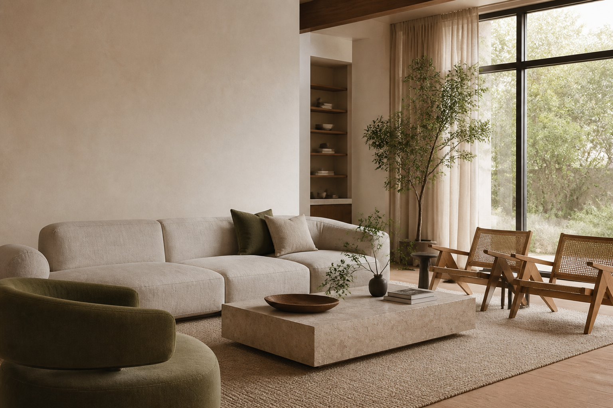

Full Interior Design
Concept, spatial planning, material palettes, technical drawings and site direction.

Residential interiors · Malaysia
Quietly expressive interiors shaped by natural materials, thoughtful detail and the rhythms of everyday life.
Studio perspective
Forma designs homes with restraint, warmth and an eye for how they will age. We bring architecture, interiors and objects into one clear, enduring language.
What we shape
Our integrated service keeps the architectural idea consistent through every scale and decision.
Concept, spatial planning, material palettes, technical drawings and site direction.
A clear design framework and expert guidance for an existing home renovation.
Furniture, lighting, art and objects selected to complete your space with intention.
A complete point of view
We consider light, movement, texture and storage alongside the furniture you touch every day.
Our process
A structured process makes room for careful choices, clear communication and a cohesive result.
Site, lifestyle, priorities and possibilities.
Spatial concept, material language and budget.
Detailed design, documentation and sourcing.
Site guidance, installation and final styling.
“Our home feels calmer, more generous and unmistakably ours.”
Project enquiry
Share the location, scope and timing of your project. We’ll respond with next steps.